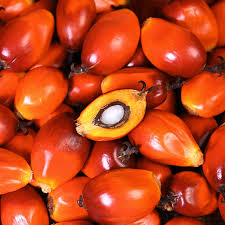
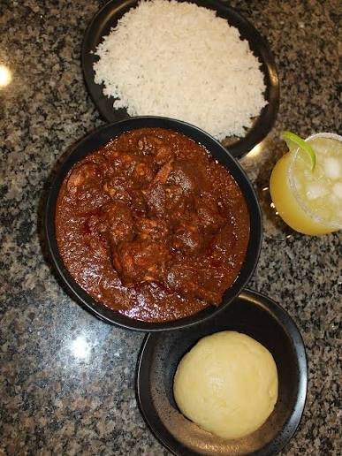

Liberian Potato Greens


Description
Liberian palm butter soup is an iconic, rich West African stew made by simmering extracted palm fruit cream with meats, smoked or dried fish, and traditional spices, then served over white rice or fufu.
Key Ingredients
- Palm nuts/fruits
- A mix of meats such as beef, chicken, goat, or smoked/dried fish
- Aromatics & Spices: Onions, garlic, ginger, scotch bonnet or habanero peppers, and cubes (Maggi), salt, traditional palm butter leaves
- Oil (Fresh red palm oil or Argo oil)
Steps to Cook Palm Butter
- Harvest the greens if you plant it or buy some from the local market
- Boil the palm nuts
- Pound the boiled palm nuts
- Place it in a bowl and add water (cold or warm) to extract the juice
- Extract the rich orange juice/cream using a filter
- Parboil your meat/chicken/fish with seasoning
- Add fish/Meat/chicken to the palm butter and allow it to cook
- Enjoy your tasty and delicious meal
Home